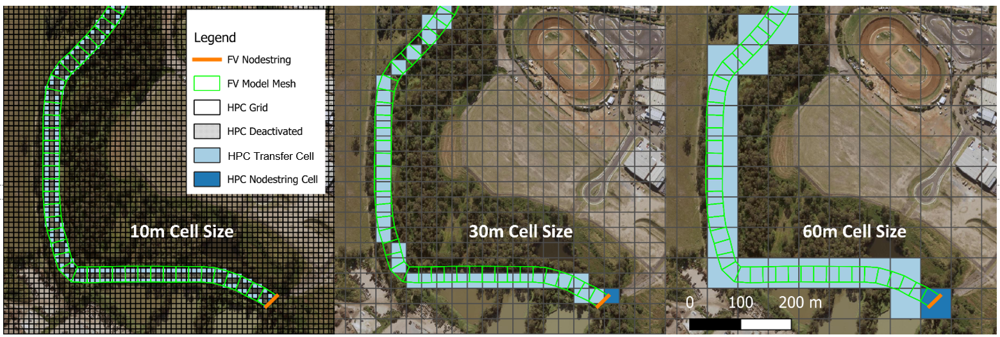
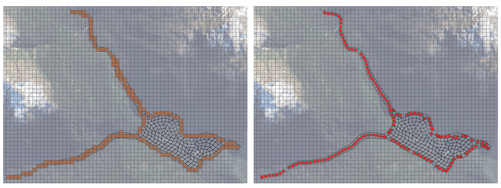
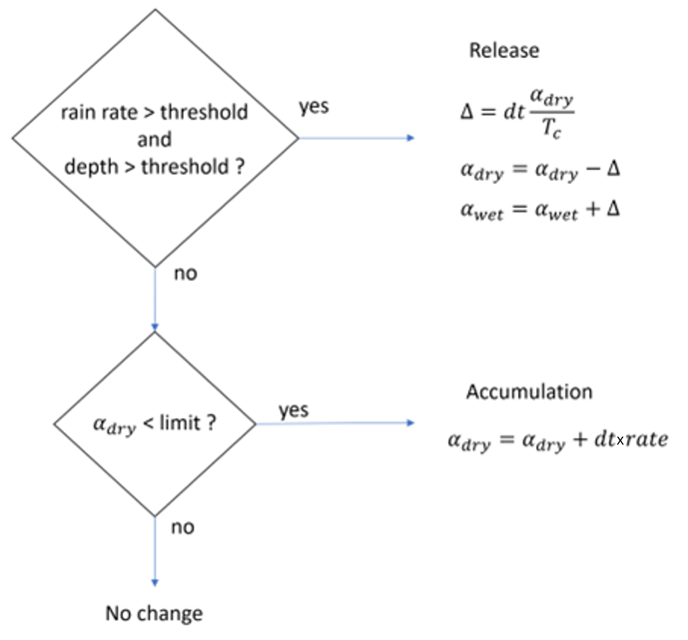
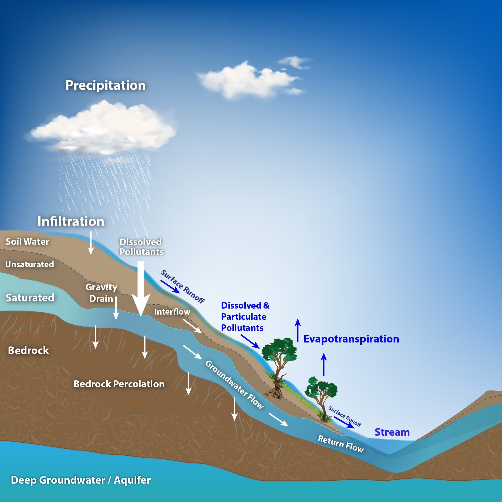

3 Process descriptions
Previous chapters have presented an overview of the architecture and capabilities of TUFLOW CATCH. This chapter presents the details of the processes that TUFLOW CATCH executes. It does not present the processes executed by either TUFLOW HPC or TUFLOW FV: these are detailed in the respective model user and science manuals, and relevant release notes here:
TUFLOW CATCH provides these primary functions:
- Coordination of the execution of TUFLOW HPC and TUFLOW FV across a whole-of-catchment domain (Hydrology and Integrated configurations)
- Automatic geolocation and writing of flow and concentration boundary conditions for TUFLOW FV (as the receiving water model), generated from TUFLOW HPC predictions (as the catchment model) (Hydrology and Integrated configurations)
- Pollutant export and transport calculations within a catchment (Pollutant Export and Integrated configurations)
The first of these is its core architectural capability and so is described in Section 2.3.1. The latter are technical componentry of this architecture and so are detailed here in Section 3.1, Section 3.2 and Section 3.3, respectively.
3.1 Geolocation
Manually linking catchment and receiving water models can potentially be a time consuming and error prone process. When executed in configurations other than Pollutant Export (see Section 1.3), TUFLOW CATCH undertakes this task automatically via a process of geolocation, whereby TUFLOW HPC cells that spatially coincide with either TUFLOW FV nodestring inflows (user nominated, see Section 4.5.4) or TUFLOW FV mesh cells are identified. These TUFLOW HPC cells are called transfer cells. Once identified, these transfer cells track the local surface and groundwater flow volumes and constituent masses predicted by TUFLOW HPC, and each transfer cell’s outflows are converted into timeseries and exported into the comma delimited (.csv) format expected by TUFLOW FV as boundary conditions. It is noted that:
- Where the user has nominated a nodestring/s as transfer locations from TUFLOW HPC to TUFLOW FV, TUFLOW CATCH will write the corresponding TUFLOW FV boundary condition files as ‘Q’ types that include the transfer of momentum from TUFLOW HPC to TUFLOW FV. As such, these boundaries (and specifying the corresponding TUFLOW FV nodestrings) should be considered where channelised riverine inflows and the like are to be matched, i.e. where inflow momentum is important in controlling receiving water hydrodynamics
- Where TUFLOW CATCH automatically geolocates non-nodestring transfer locations from TUFLOW HPC to TUFLOW FV, TUFLOW CATCH will write the corresponding TUFLOW FV boundary condition files as ‘QC’ types that exclude the transfer of momentum from TUFLOW HPC to TUFLOW FV. As such, these boundaries should typify non-channelised ‘lateral’ inflows where momentum transfer is less important in controlling receiving water hydrodynamics
- Boundary data for TUFLOW FV is written with date (
dd/mm/yyyy hh:mm:ss) format - TUFLOW HPC cells that are located within the TUFLOW FV mesh but are not transfer cells (e.g. lie well within the TUFLOW FV model mesh) are designated as deactivated within TUFLOW HPC and are not included in simulation
This automated selection of linkage cells is sufficiently robust to handle relative differences in mesh/grid resolution between TUFLOW HPC and TUFLOW FV, including cases where the TUFLOW HPC model is higher resolution than the (local) TUFLOW FV model mesh, and vice-versa. Some typical cases are presented in Figure 3.1.

After all mesh elements and boundary nodestrings are processed, any cells entirely within the TUFLOW FV mesh are deactivated from TUFLOW HPC computations - these locations within the overall model domain are simulated by TUFLOW FV.
The locations of the TUFLOW HPC transfer cells automatically geolocated by TUFLOW CATCH are reported in the TUFLOW HPC hpc_transfer check file for review. The corresponding TUFLOW FV boundary condition locations are also reported in the TUFLOW FV bc_check_P check files. An example of both is presented in Figure 3.2, with TUFLOW HPC and TUFLOW FV check file outputs on the left (brown squares) and right (red dots), respectively.

The above geolocation process does not exclude or prevent the TUFLOW FV user from manually specifying additional boundaries to a TUFLOW FV model. For example, tidal or wastewater discharge (or other) boundaries can be specified by the user within the TUFLOW CATCH control file as per a normal TUFLOW FV model set up by specifying ‘bc’ blocks as required. TUFLOW CATCH will collect these manual (user defined) boundaries and all automatically geolocated boundaries and apply them to the execution of TUFLOW FV under TUFLOW CATCH.
An example of how this geolocation method supports transfer of water, concentrations and momentum is provided in Figure 3.3. The animation presents a catchment derived TUFLOW HPC flow originating from left of screen (and from the fixed grid domain) being transferred automatically into the (flexible mesh) TUFLOW FV domain, and then advected downstream to the right. Constituent concentrations vary from low (blue) to red (high).
3.2 Pollutant export
TUFLOW CATCH supports the simulation of pollutant generation and associated surface (and optionally subsurface) transport within the catchment domain. It does so on a spatially varying basis via use of materials so that, in a manner analogous to hydraulic roughness calculations (that also use materials), pollutant export simulation is ultimately affected on a computational cell by computational cell basis. This obviates the need to make top-down lumped hydrologic or pollutant export related assumptions, and facilitates the solution of the equations of motion and solutes on a spatially and temporally resolved basis.
Pollutant export simulation within TUFLOW CATCH allows for any of the following simulation methods per pollutant:
- Constant. Specification of a constant concentration to be written to TUFLOW FV boundary conditions without numerical simulation in TUFLOW HPC. Examples include water quality constituents that are not meaningfully conceptualised as being liberated from a ground surface, such as dissolved oxygen, or
- Timeseries. Specification of a time varying concentration, again to be written to TUFLOW FV boundary conditions without numerical simulation. Examples include water temperature
- Material based. Specification of the following on a material by material basis, for a given pollutant:
- The computational pollutant export method to be used
- The parameters associated with the selected computational pollutant export method
For a model demonstration of the above pollutant export options, please refer to TUFLOW CATCH Tutorial Model 1.
Different pollutant export methods across the above options can be used within a single TUFLOW CATCH simulation for different pollutants. A given pollutant, however, should not have different material based pollutant export methods applied to it within a given simulation. Commands are provided in detail in Chapter 4, however an example of such a specification is provided following, with incomplete (…) parameter lists for brevity.
Constant POLLUTANT_A == 8.0
Time-Series POLLUTANT_B == temptre
Material == ALL
POLLUTANT_C, Method == method1, param1 == 100.0, \(\ldots\)
POLLUTANT_D, Method == method2, param1 == 10.0, \(\ldots\)
POLLUTANT_E, Method == method1, param1 == 0.17, \(\ldots\)
POLLUTANT_F, Method == method2, param1 == 1.23, \(\ldots\)
\(\ldots\)
End Material
Material == 1, 4
POLLUTANT_C, Method == method1, param1 == 43.0 \(\ldots\)
POLLUTANT_E, Method == method1, param1 == 0.37 \(\ldots\)
\(\ldots\)
End Material
Multiple constant and time-series pollutants can be specified (via individual command lines), and material blocks can be specified to apply to more than one material (the above example applies to ALL materials, then materials 1 and 4, for example). In a manner akin to specification of roughness in TUFLOW HPC, sequences of material blocks progressively spatially overwrite in the order presented. In the above example, materials 1 and 4 would therefore be interpreted as
Material == 1, 4
POLLUTANT_C, Method == method1, param1 == 43.0, \(\ldots\)
POLLUTANT_D, Method == method2, param1 == 10.0, \(\ldots\)
POLLUTANT_E, Method == method1, param1 == 0.37, \(\ldots\)
POLLUTANT_F, Method == method2, param1 == 1.23, \(\ldots\)
\(\ldots\)
End Material
Materials 2 and 3 would be as per the ALL specification above.
Different computational pollutant export methods can be assigned to different pollutants within a single material block. The same computational pollutant export method should be assigned to the same pollutant across multiple material blocks, albeit with different parameterisations. For example, POLLUTANT_C should not have the Washoff1 method applied in material 3 and the Shear1 method applied in material 1.
The above pollutant export models are described following.
3.2.1 Constant
The constant pollutant export method is the simplest of all available methods. It does not involve any calculations within TUFLOW HPC. Rather, it has TUFLOW CATCH assign the specified constant value to the relevant column in all TUFLOW FV boundary condition files produced by TUFLOW HPC, for all times. It is suitable for pollutants that are conceptually inconsistent with generation from a ground surface, such as dissolved oxygen or phytoplankton.
3.2.2 Timeseries
The timeseries pollutant export method does not involve any calculations within TUFLOW HPC. Rather, it has TUFLOW CATCH assign an interpolated timeseries value to the relevant column in all TUFLOW FV boundary condition files produced. Interpolation is based on matching the specified timeseries timestamp with the output frequency of TUFLOW FV boundary condition files. It is suitable for pollutants that are conceptually inconsistent with generation from a ground surface and also likely to vary temporally, such as water temperature. One timeseries per pollutant can be specified and it is applied across the entire model domain.
3.2.3 Material based export
The material based pollutant export method involves cell by cell calculations within TUFLOW HPC, coordinated by TUFLOW CATCH. The available methods are described following.
3.2.3.1 Accumulation and washoff
Accumulation/washoff methods are common in urban water modelling and are conceptually distinct from event mean concentration / dry weather concentration (EMC/DWC) methods. The former have been the subject of considerable research and development since at least the 1970s. In short, the accumulation washoff method conceptualises pollutant accumulation during no-flow or low-flow conditions and washoff during higher-flow conditions. Typically, a proportion of the accumulated pollutant runs off if a threshold flow or flow depth is reached (i.e. enough energy is available for liberation of mass). This mechanism is generally based on a non-linear function for the runoff, if runoff is not explicitly simulated (e.g. in models that make lumped average assumptions). TUFLOW CATCH’s implementation of this method (that explicitly simulates hydrology so does not resort to such lumped assumptions) is described following. It can be applied equally to both dissolved and particulate pollutants.
3.2.3.1.1 Accumulation
TUFLOW CATCH allows for the specification of accumulation rates for each pollutant simulated, on a spatially varying (material by material) basis. These rates are linearly applied in time until a user specified maximum areal mass (also kg/ha/yr) is reached. Even though these rates and maximums are specified per material, they are used to undertake accumulation calculations on a cell by cell basis at the beginning of every timestep. For example, if a user has specified a 5 metre TUFLOW HPC grid size, then pollutant accumulation calculations will be undertaken at this same spatial resolution.
As each pollutant accumulates, it is added to TUFLOW HPC’s dry store mass, which is also tracked on a cell by cell basis. It is this dry store mass that is then depleted (washed off) when user specified hydrologic conditions are met (see Section 3.2.3.1.2). Each pollutant’s and each cell’s dry store mass is temporally incremented at the specified rate, up to a user specified limiting areal mass (kg/ha). Accumulation does not occur (i.e. the accumulation rate is set to zero) if washoff is occurring during a given timestep.
One advantage of the pollutant accumulation method is that the user has full control over the spatial distribution of the associated rates, through the use of materials. Specifically, each material is assigned these rates, and materials are (typically) specified as polygons that cover regions with similar pollutant properties (analogous to roughness materials). Although it may seem natural to equate this spatial distribution of pollutant properties with land uses (as is often the case in lumped hydrology/pollutant export models), this is not a requirement of TUFLOW CATCH. Indeed, the user has full discretion with regard to how pollutant properties are set, and whilst perhaps making initial use of land use data, it is possible that different material polygons that represent the same land use are given different pollutant properties. For example, an ‘urban’ land use might be tagged to two separate housing estates in a generic land use GIS vector layer, but the user may also know that one estate has stormwater treatment devices in place and the other does not. In such an instance, different pollutant accumulation (and washoff) parameters can be applied through TUFLOW CATCH. In short, TUFLOW CATCH has been deliberately designed to allow users to insert their local knowledge of the systems being modelled into the model build process directly, down to a cell by cell spatial resolution if required, without being limited by lumping assumptions.
Akin to the flexibility offered in spatial resolution, TUFLOW CATCH allows full control over the specification of pollutant accumulation rates, and in doing so allows the user to inform the modelling process with local knowledge and expertise.
The relevant TUFLOW CATCH commands are described in Section 4.5.3.3.1.
3.2.3.1.2 Washoff
TUFLOW CATCH allows for the specification of the manner in which the accumulated dry store mass described in Section 3.2.3.1.1 is washed off in response to local hydrologic conditions. This specification occurs in the same command line as accumulation rates (for a given pollutant), which is therefore also on a material by material basis: for a given material and pollutant, the accumulation and washoff parameters are related, and therefore co-specified.
The TUFLOW CATCH washoff method is presented conceptually in Figure 3.4. Under wet weather conditions, a mass per unit area \(\Delta\) (kg/ha) is released from the dry store mass (\(\alpha_{dry}\), kg/ha) into the wet store (\(\alpha_{wet}\), concentration \(C\), mg/L) (i.e. to add to a water concentration), governed by a user defined time constant (also referred to as a time of concentration), T\(_c\), such that over a timestep \(dT\) (with appropriate conversion factors for reconciliation of units):
\[ \Delta = dT\frac{\alpha_{dry}}{T_c} \tag{3.1}\]
This release only occurs once user specified minimum rain rates, \(R_r\), and surface water depths, \(d\), have both been exceeded. Otherwise, the dry store masses described in Section 3.2.3.1.1 are accumulated at the rates specified.

If a pollutant is released into its wet store, it is transported according to the progression of hydrologic and hydraulic flows (and associated advection and dispersion), which is completed as a separate calculation step to the generation update.
Settling velocities are assigned to individual pollutants, and may vary spatially with material. An example of where the latter might be applied is when sediment is known to flocculate in saline conditions and hence have its settling properties modified. Any settling returns pollutants from the wet store to the dry store. This is not recommended for dissolved pollutants, and where settling is to be turned off, the velocity should be set to zero. The mass flux per unit area in time \(dT\) due to settling \(\Delta\) (kg/ha) is given by Equation 3.2:
\[ \Delta = dT \times w_sC \tag{3.2}\]
w\(_s\) is the user specified settling velocity, \(C\) is the wet store cell concentration of pollutant. No other constraints to settling occurring are applied in this model.
If soils and subsurface flow (interflow) is not simulated in TUFLOW HPC, then this transport is purely surficial. If soils are included then released pollutants will be transported in both the surface and subsurface in accordance with water flows. TUFLOW CATCH allows for the optional prevention of infiltration of a given pollutant into the subsurface flow if soils are included in the TUFLOW HPC simulation. This is most relevant for particulate pollutants such as sediment or particulate organic material.
A conceptualisation of TUFLOW CATCH’s pollutant generation and transport methods is presented in Figure 3.5.

The relevant TUFLOW CATCH commands are described in Section 4.5.3.3.1.
3.2.3.2 Shear stress
Shear stress generation methods are common in natural waterway modelling studies (e.g. estuaries and coastal oceans), particularly with regard to the simulation of sediment transport. In short, these methods conceptualise sediment release from the bed as a function of overlying hydrodynamic shear stress: once a specified minimum shear stress is exceeded, sediment is released to the water column. Similarly, these methods also allow for deposition of previously suspended sediment back to the bed, and this is typically allowed to occur (at a set settling velocity) once ambient hydrodynamic shear stress drops below a specified maximum depositional shear stress. More advanced methods allow for construction of intermediary bed roughness models that translate raw hydrodynamic shear stress to the corresponding shear stress that is actually felt by the bed and can therefore cause erosion (or allow deposition). These methods therefore allow for the ongoing erosion and deposition of particulate materials as hydrodynamic conditions evolve in time and space. TUFLOW CATCH’s implementation of this method is described following. It is intended to be applied primarily to particulate pollutants, rather than dissolved.
3.2.3.2.1 Erosion
TUFLOW CATCH allows for the specification of erosion behaviour of any pollutant, on a spatially varying (material by material) basis. Even though this behaviour is specified per material, it is used to undertake erosion calculations on a cell by cell basis at the beginning of every timestep. For example, if a user has specified a 5 metre TUFLOW HPC grid size, then erosion calculations will be undertaken at this same spatial resolution. As each pollutant erodes from its dry store mass, it is released to its wet store and advected/dispersed accordingly. This removal is tracked and reported at the end of a simulation as a loss to each cell’s dry store mass (kg/ha).
TUFLOW CATCH adopts the Mehta erosion model on a cell by cell basis, such that the erosive flux \(\Delta\) (kg/ha) is given by Equation 3.3 in time \(dT\) (with appropriate units conversions):
\[ \Delta = dT \times E_r\left(\frac{\tau}{\tau_{ce}}-1\right)^{\alpha} \tag{3.3}\]
\(E_r\) is the erosion rate (g/m\(^2\)/s), \(\tau\) is the simulated hydrodynamic shear stress (N/m\(^2\)), \(\tau_{ce}\) is the user specified critical shear stress for erosion (N/m\(^2\)), \(\alpha\) is a dimensionless parameter set to 1.0 and \(\tau > \tau_{ce}\). TUFLOW CATCH does not deploy a bed roughness model so \(\tau\) is the pure hydrodynamic shear stress calculated from cell velocity. Once computed, eroded mass is tracked so that at simulation end, TUFLOW CATCH produces a map of eroded areas that allows for identification, for example, of ‘hotspot’ erosion locations. Users specify a limit to the mass of pollutant per unit area that is erodable within each material. This can be converted by the user to a depth via independent post processing steps if desired, by assuming a bulk density. This same output layer presents areas of accumulation, if this has occurred.
The relevant TUFLOW CATCH commands are described in Section 4.5.3.3.2.
3.2.3.2.2 Deposition
TUFLOW CATCH allows for the specification of depositional behaviour of any pollutant, on a spatially varying (material by material) basis. Even though this behaviour is specified per material, it is used to undertake deposition calculations on a cell by cell basis at the beginning of every timestep. As each pollutant deposits from its wet store mass, it is transferred to its dry store mass. This deposition is tracked and reported at the end of a simulation as a gain to each cell’s dry store mass (kg/ha).
TUFLOW CATCH adopts the Krone deposition model on a cell by cell basis within this pollutant export model, such that the areal depositional flux \(\Delta\) (kg/ha) in time \(dT\) is given by Equation 3.4. This is a more advanced version of the deposition approach used in the accumulation washoff model (Equation 3.2).
\[ \Delta = dT \times \left(1-\frac{\tau}{\tau_{cd}}\right)w_sC \tag{3.4}\]
\(\tau\) is the raw hydrodynamic shear stress (N/m\(^2\)), \(\tau_{cd}\) is the user specified critical shear stress for deposition (N/m\(^2\)), w\(_s\) is the user specified settling velocity, \(C\) is the wet store cell concentration of pollutant and \(\tau < \tau_{cd}\).
The relevant TUFLOW CATCH commands are described in Section 4.5.3.3.2.
3.3 Interventions
TUFLOW CATCH supports the simulation of spatially distributed catchment based measures to remove pollutants from surface waters. These measures are referred to as interventions, and might include devices such as constructed wetlands, bioretention systems, grassed swales, riparian revegetation strips or similar. TUFLOW CATCH does so by allowing users to specify:
- The location and orientation of any number of intervention devices via a user digitised polyline for each
- The pollutant removal properties of each intervention device, with these properties adjustable within a device on a pollutant by pollutant basis
TUFLOW CATCH explicitly predicts surface hydraulics (i.e. water location, depth, velocity and associated pollutant concentrations) to the spatial resolution of a grid cell. This offers a powerful potential to users when simulating interventions: it means that intervention devices can be digitised in the actual locations they are intended to be (or already exist) and to therefore interact only with the water volume that TUFLOW CATCH predicts to pass through those locations. This obviates the need to somehow parameterise this volume by relying on proportioning or other assumptions - TUFLOW CATCH explicitly avoids this for the user as a matter of course, and does not resort to top down or lumped assumptions.
TUFLOW CATCH performs removal calculations based on mass fluxes. TUFLOW CATCH does not modify concentrations directly. This is because mass flux based approaches are meaningful in terms of environmental process simulation and understanding - concentrations are very much less so. This is discussed in detail in one of TUFLOW’s global webinars. The pollutant mass removal methods offered by TUFLOW CATCH’s intervention devices are (per pollutant):
- Equation: An equation based reduction in pollutant mass flux passing through a device
- Table: A two dimensional array of proportional pollutant mass removals that vary based on (dynamically simulated) incoming pollutant concentration and flow rate
For a model demonstration of the above mass removal options, please refer to TUFLOW CATCH Tutorial Model 2.
Different mass removal methods across the above options can be used within a single TUFLOW CATCH intervention device for different pollutants. Commands are provided in detail in Section 4.5.3.5, however the fundamental premise is that interventions are specified via device blocks (akin to material based pollutant export), as follows.
Device == ALL
POLLUTANT_C, Method == Eqn, Eqn == Constant, Coefficients == 1.0
POLLUTANT_D, Method == Eqn, Eqn == Constant, Coefficients == 0.2
POLLUTANT_E, Method == Table, Path == ..\..\bc_dbase\Alldevices.csv
POLLUTANT_F, Method == Eqn, Eqn == Constant, Coefficients == 0.1
End Device
Device == Wetland1
POLLUTANT_C, Method == Eqn, Eqn == Constant, Coefficients == 0.5
POLLUTANT_E, Method == Table, Path == ..\..\bc_dbase\Wetland1.csv
End Device
Multiple methods can be specified within a device block (one for each pollutant), and subsequent block specifications can be constructed to progressively overwrite previous commands. For example, the above applies a suite of methods to ALL devices in the first block, and these are then partially overwritten (modified) for Wetland1. In a manner akin to specification of pollutant export properties, sequences of blocks affect this overwrite in the order presented. In the above example, device Wetland1 would therefore be interpreted as
Device == Wetland1
POLLUTANT_C, Method == Eqn, Eqn == Constant, Coefficients == 0.5
POLLUTANT_D, Method == Eqn, Eqn == Constant, Coefficients == 0.2
POLLUTANT_E, Method == Table, Path == ..\..\bc_dbase\Wetland1.csv
POLLUTANT_F, Method == Eqn, Eqn == Constant, Coefficients == 0.1
End Device
Other intervention devices would be as per the ALL specification above. The relevant TUFLOW CATCH commands are described in Section 4.5.3.5.
3.3.1 Mass removal
TUFLOW CATCH offers a range of mass removal methods. Regardless of individual removal details however, all methods rely on initially computing the incoming mass flux of pollutant \(j\), \(F^{in}_j\) across cell faces intersected by the intervention polyline, at each simulation timestep. It is this mass flux (not concentration) that is subsequently adjusted by TUFLOW CATCH based on the operation of user defined mass removal methods. These methods are described following.
3.3.1.1 Equation
3.3.1.1.1 Constant
The constant mass removal method is the simplest of all available methods. At each computational timestep, this method multiplies the incoming mass flux of pollutant \(j\) by the user specified factor. This factor (in the range 0.0 - 1.0) is a mass removal factor for a given constituent, \(R_j\), where the corresponding outgoing pollutant mass flux for constituent \(j\), \(F^{out}_j\) is given by Equation 3.5.
\[ F^{out}_j = (1 - R_j) \times F^{in}_j \tag{3.5}\]
The removed flux \(F^{rem}_j\) is therefore given by Equation 3.6.
\[ F^{rem}_j = (R_j) \times F^{in}_j \tag{3.6}\]
For example, if a user sets \(R_j\) to be 0.7 for a given intervention device and constituent, then 70% of pollutant \(j\)’s mass flux is removed at each timestep, and 30% is allowed to pass.
The relevant TUFLOW CATCH commands are described in Section 4.5.3.5.1.
3.3.1.1.2 Other
Other equation based interventions may be implemented in future. Contact support@tuflow.com with requests or suggestions.
3.3.1.2 Table
The table mass removal method is an extension of the constant mass removal method in that it allows the user to specify different \(R_j\) for different (dynamically computed) environmental conditions. Specifically, this method allows the user to specify the variation of \(R_j\) as a function of both:
- Incoming flow rate (m\(^3\)/s), and
- Incoming pollutant concentration (variable units)
This approach is supported in acknowledgement that some intervention devices are able to treat higher concentrations of pollutants entering a device at lower flow rates more efficiently and effectively than the same pollutant entering at lower concentrations and higher flow rates. This variation in \(R_j\) is provided via a text based table input, with:
- A rows defining the variation in \(R_j\) with incoming concentration from left to right, for a given incoming flow rate, and
- A columns defining the variation in \(R_j\) with incoming flow rate from top to bottom, for a given incoming concentration
At each timestep, TUFLOW CATCH uses incoming concentrations and flow rates to dynamically interpolate a value of \(R_j\) from the user specified table, and applies Equation 3.5 accordingly.
Support for this mass removal method is only possible because TUFLOW CATCH solves the equations of motion and transport to predict temporally and spatially varying water velocities (flow rates) and concentrations. Such a capability is difficult to offer under, for example, the application of lumped assumptions that do not admit the explicit simulation of water as it moves through environmental systems.
The relevant TUFLOW CATCH commands are described in Section 4.5.3.5.2.
3.4 Non-hydrologic surface loads
TUFLOW CATCH supports simulation of the introduction of non-hydrologic (i.e. independent of rainfall) surface flows and loads to the catchment domain. This feature might be used, for example, to simulate the discharge of sewage treatment plants, groundwater exfiltration or other non-hydrologic processes. This simulation is spatially explicit: flows and pollutants are introduced where they actually occur on ground rather than be distributed across a lumped computational subcatchment. Simulation is affected through construction of point, line or region GIS features (using the standard TUFLOW 2d_sa_ empty GIS layer), and linking associated feature names with entries in the TUFLOW database csv file. These entries then point to flow and concentration timeseries data.
The relevant TUFLOW CATCH commands are described in Section 4.5.3.6.